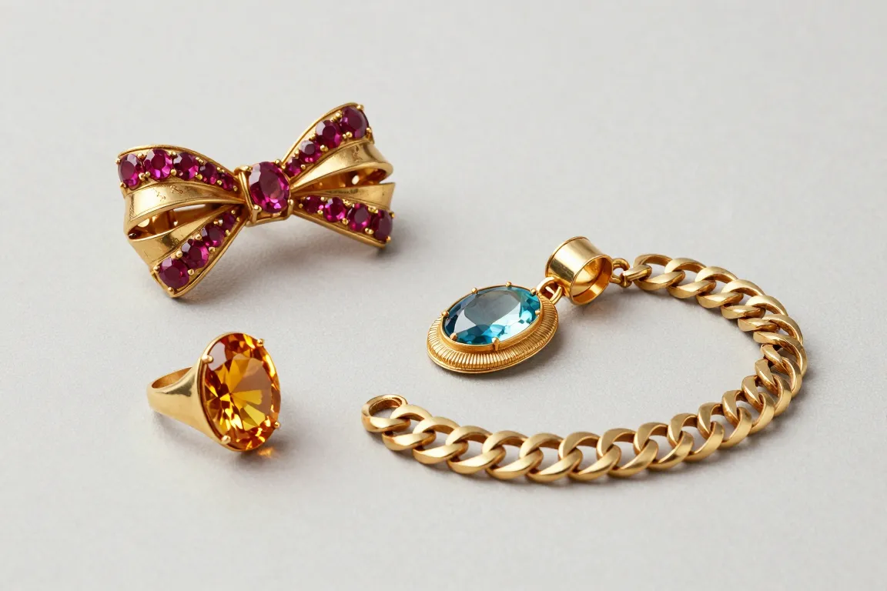

Store, buede smykker i varmt gult og rosa gull med store farget stein. Formene er sløyfer, bånd, blomster og armbånd av ledd. De ble laget i krigsårene, under krigstidens regler for metall.

Kjerneidé
Et smykke er en dristig, varm skulptur i gull: store, buede former og lyse farget stein som vinner på kjolen og cocktailtimen.
Designprinsipper
Bruk gult og rosa gull som hovedmetall; platina er knapt i krigsårene.
Form metallet til sløyfer, bånd, snirkler, blomster og folder som ser ut som tøy.
Sett store farget stein, som akvamarin, citrin, ametyst og topas, i en enkel innfatning.
Legg til små rubiner, syntetiske rubiner eller safirer som et fargepunkt.
Gjør stykket stort. En cocktailring er 2 til 3 cm, en brosje 6 til 9 cm og et armbånd 2 til 4 cm bredt.
Bygg et armbånd av buede ledd som et beltespor, et gassrør eller en flettet stropp.
Lag klipsbrosjer i par som kan bæres som ett stykke på slaget eller utringningen.
Poler gullet blankt, og sett det mot noen matte eller vevde flater.